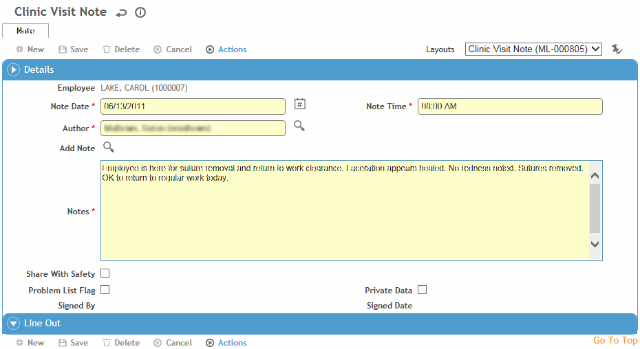

On the Notes tab, click a link to edit an existing note, or click New.

The Note Date and Note Time will be populated with the treatment date and current time, unless specified to be different in the note layout (e.g. current time).
For Occupational Health Notes: The Author defaults to the practitioner assigned to the record, if applicable, or your default practitioner. If necessary, select a different practitioner from the search list.
For all other notes: The Author defaults to the user currently logged in.
Click the Add Note search icon to select standard note text from those stored in the AddNote look-up table and/or enter new notes in the Notes field. As with all text input fields, the remaining characters allowed are displayed at the bottom right of the text box.
Clinic Visit notes: If you want this note to be displayed in the Incident Notes tab, select Share with Safety.
Occupational Health and Incident notes: Indicate if the information is to appear in the Problem List (see Working with the Problem List), and whether the data is Private (private data can be included or excluded in reports where indicated).
If the “Private notes are only visible to their authors” system setting is selected, and the Private checkbox is selected, only the Author will be able to view the note in the future; if you save a private note but you are not the Author, your user will lose access to it. If no Author is specified on the note, it will be visible to all users with the necessary security permissions.
Click Save.
An existing note can only be edited by the user who created the note, the author, or a user who has been granted the required security action. A note can only be edited within an interval of time set in the system settings (see Changing Your System Settings). After that, the note is locked.
For Clinic Visit and Case notes: If you need to revise a note but retain the original, you can “line out” the original. This can be done by an administrator, the creator of the note, or the user identified as the author.
Select the Line Out Note checkbox at the bottom of the Note form, and enter the Reason.
You are asked if you want to create a copy of the original; if you choose Yes, the original note is cloned into a new note, except for the date and time.
The lined out note still appears in the list of notes, identified with the Line Out checkbox, and is locked from further edits (except the Problem List and Private Data flags).
A signed note can only be edited (or lined out) by its author, and only if the note has not become locked (based on the values provided for the two “Medical Records Lockout” system settings).